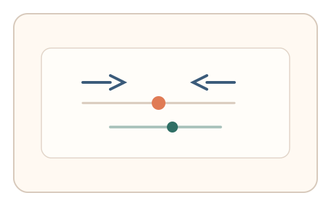
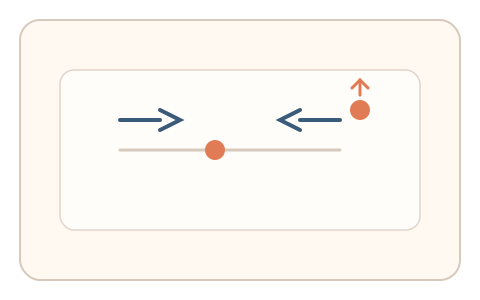
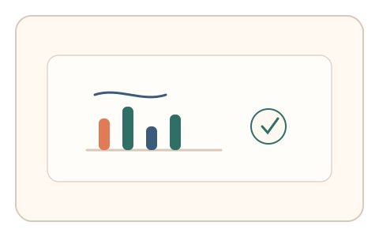

#83
Morphological Analysis - Combination Batches
已扩展
错觉校准双任务
在校准错觉图形的同时响应短促提示，以错觉偏差量与反应时序列的相对关系验证真实性。
概念原文
用户在校准错觉图形的同时响应短促提示，系统用错觉偏差量与反应时序列的任务内相对比较判定。任务结构为双任务切换，信号形态为错觉偏差与节律序列。
把“错觉偏差 + 干扰结构”组合成难以复制的双信号。
研究背景
视觉错觉会引发稳定的感知偏差，而双任务切换会带来可预测的注意力与反应时波动。将错觉校准与节律提示结合，可形成难以被脚本同时拟合的双信号。
核心机制
- 呈现错觉图形并要求用户调整到“看起来正确”的状态。
- 同时出现短促提示，用户需要即时响应。
- 记录错觉偏差量与反应时序列。
- 在任务内做相对比较以形成稳定判定。
用户流程
- 步骤 1：用户看到错觉图形并开始校准。
- 步骤 2：期间响应短促提示并继续校准。
- 步骤 3：系统记录偏差量与节律序列并判定。
判定信号
错觉偏差量
人类对错觉的校准偏差具有稳定分布。
反应时序列与波动
双任务切换会产生特定的节律抖动。
判定逻辑
偏差量需落在人类分布区间，且反应时序列与偏差存在合理关联；过度平滑或无波动判异常。
对抗面
- 脚本直接计算错觉图形几何并校准
- 预设固定反应时序列进行伪造
防御与缓解
- 随机化错觉类型与参数
- 动态调整提示时序与负载
- 叠加指针轨迹与停顿信号进行多信号判定
可达性与风险
提供低负担模式与更长响应窗口，允许替代任务避免对注意力障碍用户造成压力。
- 双任务负荷过高导致误拒
- 不同设备刷新率影响错觉呈现
可视化状态

状态 1：错觉校准
用户调整错觉图形到主观正确。

状态 2：双任务响应
校准过程中出现短促提示。

状态 3：序列判定
结合偏差量与节律序列判定。
参考资料
Optical illusion
说明错觉偏差与感知校准基础。
Task switching
说明双任务切换对反应时的影响。